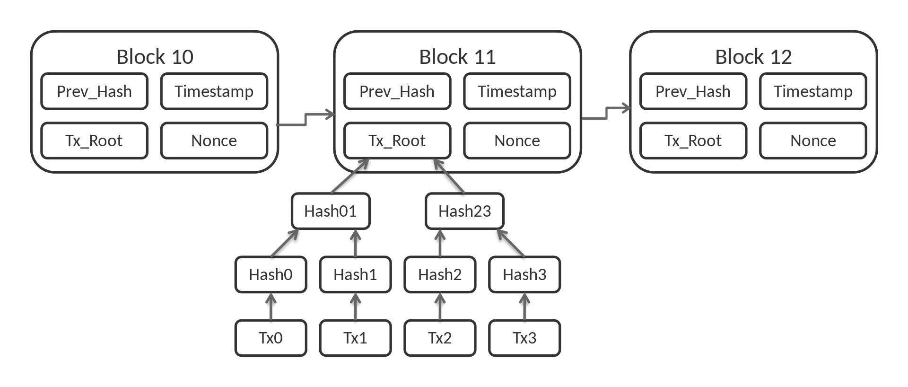

From Wikipedia, the free encyclopedia
For other uses, see Block chain (disambiguation).
A blockchain is a type of distributed ledger technology (DLT) that consists of growing list of records, called blocks, that are securely linked together using cryptography. [1][2][3][4] Each block contains a cryptographic hash of the previous block, a timestamp, and transaction data (generally represented as a Merkle tree, where data nodes are represented by leaves). The timestamp proves that the transaction data existed when the block was created. Since each block contains information about the previous block, they effectively form a chain (compare linked list data structure), with each additional block linking to the ones before it. Consequently, blockchain transactions are irreversible in that, once they are recorded, the data in any given block cannot be altered retroactively without altering all subsequent blocks.
Cryptographer David Chaum first proposed a blockchain-like protocol in his 1982 dissertation "Computer Systems Established, Maintained, and Trusted by Mutually Suspicious Groups."[11] Further work on a cryptographically secured chain of blocks was described in 1991 by Stuart Haber and W. Scott Stornetta.[4][12] They wanted to implement a system wherein document timestamps could not be tampered with. In 1992, Haber, Stornetta, and Dave Bayer incorporated Merkle trees into the design, which improved its efficiency by allowing several document certificates to be collected into one block.[4][13] Under their company Surety, their document certificate hashes have been published in The New York Times every week since 1995.[14]